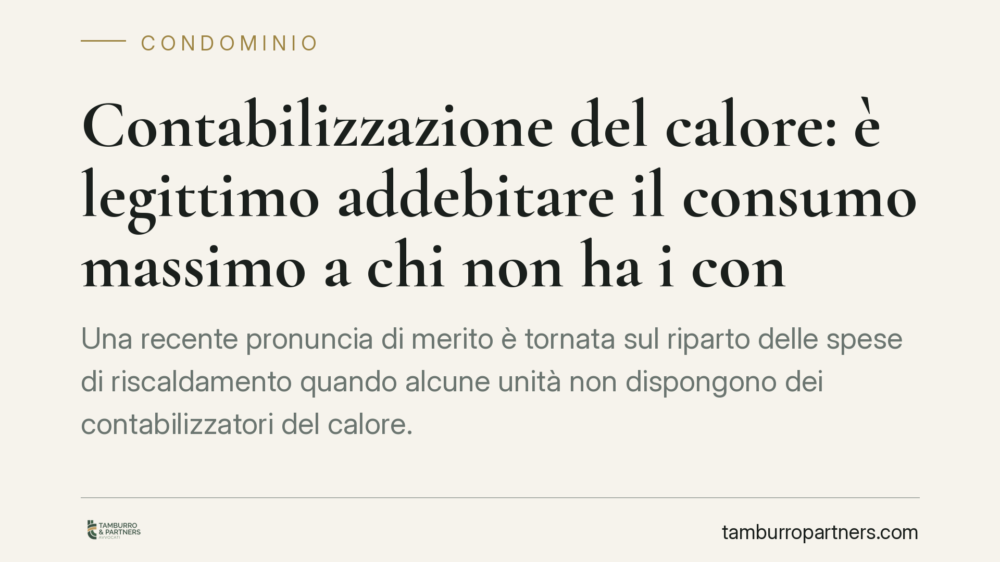

Contabilizzazione del calore: è legittimo addebitare il "consumo massimo" a chi non ha i contatori?
Una recente pronuncia di merito è tornata sul riparto delle spese di riscaldamento quando alcune unità non dispongono dei contabilizzatori del calore. In discussione la prassi di addebitare a questi condomini un "consumo massimo" presunto. Una soluzione che, in assenza di base normativa, rischia di esporre la delibera a impugnazione. Vediamo cosa prevede la disciplina e come muoversi in concreto.

Il caso
In alcuni condomini dotati di impianto centralizzato, non tutte le unità risultano provviste dei dispositivi di contabilizzazione individuale del calore. Talvolta per scelta del singolo, talvolta per oggettiva impossibilità tecnica di installazione.
Per gestire la situazione, alcune assemblee hanno adottato una soluzione sbrigativa: attribuire alle unità non contabilizzate un consumo pari al valore massimo rilevato nell'edificio, così da "scoraggiare" la mancata installazione e tutelare gli altri condomini.
La giurisprudenza di merito ha più volte guardato con sfavore a questo criterio, ritenendolo privo di fondamento normativo. Segnaliamo che gli estremi di singole pronunce vanno sempre verificati alla fonte prima di farne un uso operativo: ciò che qui interessa è il principio, ormai consolidato in diverse decisioni.
Inquadramento normativo
La materia è regolata dall'art. 9 del D.lgs. 4 luglio 2014, n. 102, come modificato dal D.lgs. 141/2016. Occorre distinguere due piani che spesso vengono confusi.
Il primo è l'obbligo di installazione dei sistemi di termoregolazione e contabilizzazione del calore negli edifici con impianto centralizzato. Il secondo è il criterio di ripartizione della spesa, disciplinato dal comma 5 dello stesso articolo (in particolare lett. d ed e), che rinvia alla norma tecnica UNI 10200.
La UNI 10200 non prevede un semplice riparto per millesimi. Distingue tra consumo volontario, misurato dai contabilizzatori e imputato al singolo sulla base dei prelievi effettivi, e consumo involontario (dispersioni di rete, fabbisogno della parte comune dell'impianto), ripartito secondo i millesimi di fabbisogno energetico. Il D.lgs. 102/2014, inoltre, ammette di discostarsi dalla UNI 10200 in casi specifici, ad esempio quando differenze di fabbisogno tra le unità rendano la sua applicazione tecnicamente inappropriata: in tali ipotesi è possibile adottare criteri alternativi, purché ancorati a parametri oggettivi.
In nessuno di questi scenari compare la figura del "consumo massimo" forfettario. È questo il punto debole della prassi assembleare: manca un aggancio normativo che consenta di presumere il consumo più elevato in luogo di una misurazione o di una stima tecnicamente fondata.
Implicazioni pratiche
Una delibera che addebita il consumo massimo alle unità non contabilizzate si espone a impugnazione. Resta però aperta una questione tecnica rilevante: se il vizio comporti nullità o annullabilità della delibera.
La distinzione non è teorica. La delibera annullabile può essere impugnata entro trenta giorni (art. 1137 c.c.), decorrenti dall'approvazione per i presenti dissenzienti o astenuti e dalla comunicazione del verbale per gli assenti. Scaduto il termine, la delibera consolida i suoi effetti. La delibera nulla, invece, può essere contestata senza limiti di tempo.
Le Sezioni Unite della Cassazione (sent. n. 9839/2021) hanno chiarito che le delibere sul riparto delle spese sono di regola annullabili, mentre la nullità resta circoscritta ai casi di radicale difformità rispetto ai criteri legali inderogabili. La qualificazione, dunque, dipende dal tipo di vizio in concreto: non esiste una risposta automatica. Per questo, nella pratica, è prudente non contare sull'assenza di termini tipica della nullità e muoversi comunque entro i trenta giorni.
Cosa fare in concreto
- Verificare il criterio di riparto applicato in delibera e confrontarlo con l'art. 9, comma 5, D.lgs. 102/2014 e con la UNI 10200.
- Controllare se sussiste un'impossibilità tecnica di installazione documentata: in tal caso il riparto va comunque ancorato a parametri oggettivi, non a un consumo presunto al massimo.
- Impugnare entro trenta giorni dall'approvazione o dalla comunicazione del verbale, senza fare affidamento sulla tesi della nullità imprescrittibile.
- Richiedere al condominio la documentazione tecnica (progetto di contabilizzazione, tabelle UNI 10200) a sostegno del criterio adottato.
- Acquisire una valutazione di un tecnico termotecnico sulla correttezza dei millesimi di fabbisogno e dei consumi involontari.
La materia intreccia profili tecnici e giuridici che richiedono una lettura congiunta della delibera e della documentazione d'impianto.
*Contributo informativo a cura di Tamburro & Partners - Avv. Giuseppe Tamburro. Non costituisce parere legale.*
Ogni condominio ha una storia a sé.
Se gestisci un'amministrazione e vuoi un confronto su una specifica questione condominiale, scrivi allo studio. Ti rispondiamo entro un giorno lavorativo.